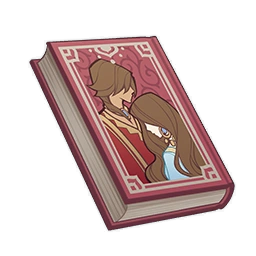

Sumeru · Books & Literature
The Tale of Shiruyeh and Shirin
This two-volume Sumeru collection follows a Jinni telling a shepherd a strange, uncertain story of Gurabad, from Kisra’s rise to Shiruyeh’s exile and the plague that bears his name.

A Jinni Tells a Desert Story
The Tale of Shiruyeh and Shirin is a two-volume Sumeru book collection found in the House of Daena. It is presented as a story told by a Jinni to a young shepherd she calls Raven, continuing the conversation framed by The Shepherd and the Magic Bottle.
The collection itself warns that the story has unknown origins and is full of absurdities. Its narrator pauses to tease her listener, cites what spirits or other people supposedly say, and dramatizes events rather than speaking as a neutral chronicler. Treat its account as a version of Gurabad’s past, not a complete historical record.
Volume I: Kisra’s Rise and a Broken Crown
The Jinni begins with the age of Shiruyeh, before the plague bearing his name. She tells how the orphan Kisra was raised by the giant bird Ghoghnus, aided by the bird, and adopted by the vassal king Ormazd Shah. Kisra becomes a celebrated hero, conquering cities, defeating tribal leaders, and bringing star-reading sages to Gurabad.
Ormazd rewards him with the name Parvez and the hand of his daughter Shirin. The volume then jumps to Ormazd and his three hundred heirs dying in a single night, leaving Kisra to take the throne as Parvezravan. The narrator offers rumors about the deaths, a strange bird, human-faced rats, and a broken crown, then leaves Shirin’s story for the next volume.
Volume II: Prophecies, Exile, and the Plague
The second volume has the Jinni recount Liloufar’s three prophecies and warnings about her daughter Shirin. In this version, Shirin’s marriage to Kisra is unhappy; she and her husband are implicated in the poisoning of Ormazd and his heirs, after which Kisra becomes king. Their son Shiruyeh is later exiled by Parvezravan, who fears the prophecy that the boy will surpass him.
Shirin disguises herself as a temple princess and gives her exiled son a false prophecy urging him to confront his father. Shiruyeh eventually kills Parvezravan, regrets the act, and receives his mother’s forgiveness. He later disappears into a chasm; a plague emerges and kills half of Gurabad’s people. The ending gives competing rumors about Shirin: she may have been sealed in a silver bottle by Al-Ahmar, or may still wander the desert.
Compare the Tale with Gurabad’s Other Records
The Tale of Shiruyeh and Shirin differs from later quest revelations about Liloupar’s family and her role in Gurabad’s downfall. Apocalypse Lost and the Memories of Gurabad vision add information that the book’s version leaves out or attributes differently. The book’s claim that Shirin and Shiruyeh became evil apparitions, for example, is part of the Jinni’s telling; Liloupar’s later dialogue says that both remain in Gurabad and that she considers them her children.
The two books are still valuable evidence of how a desert storyteller frames Gurabad’s rulers and the origins of Shiruyeh’s Plague. Read them alongside The Shepherd and the Magic Bottle, Liloupar’s quest dialogue, and the city’s records, keeping the narrator’s uncertainty and omissions in view.
This is an original CoreGG reading guide, not an official HoYoverse article or a reproduction of the game text. Source links below identify the records used so you can check the original context.
Sources & references
Check these sources for the original game text and reference trail.
- HoYoverse community · Version 3.0 book collection and House of Daena
- Genshin Impact Books · both volumes of in-game text
- Teyvatica · book analysis and narrator context
- Teyvatica · Apocalypse Lost and Liloupar’s testimony
- Teyvatica · framing prequel and the Jinni’s account
- Genshin Impact Wiki · city and quest records
- HoYoWiki · Books index
- HoYoverse · In-game Books Archive